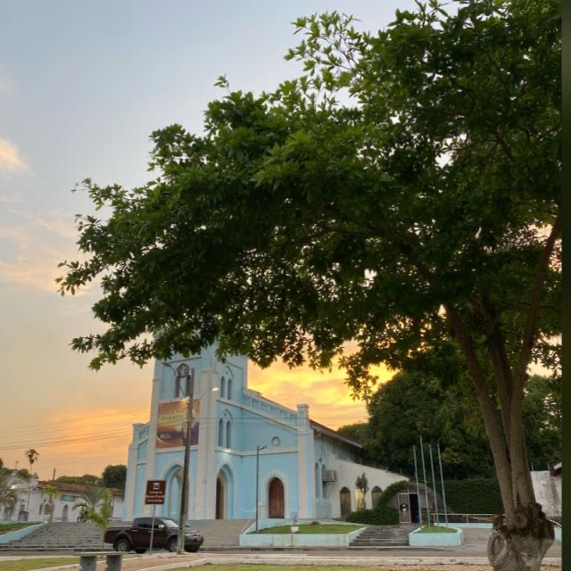

PRAÇA DA MATRIZ
MATRIZ SQUARE

Informações sobre a PRAÇA DA MATRIZ:
Praça em frente a Catedral de Conceição do Araguaia, que conta com monumentos
e estátuas de personagens fundamentais na colonização da cidade.
Localiza-se em frente ao Beiradeiro.
Conta com uma bela vista da Igreja Católica e do Rio Araguaia. É um ótimo lugar para
passar o fim de tarde com a família. Nesse local, ocorre vários
eventos da igreja e fica próximo a muitos pontos turísticos, soverterias,
restaurantes, incluindo o Seminário Diocesano,
onde os Padres são preparados para a sua missão.
Information about MATRIZ SQUARE:
Square in front of the Conceição do Araguaia Cathedral, which has monuments and statues of key characters in the colonization of the city. It is located in front of Beiradeiro.
It has a beautiful view of the Church and the Araguaia River and to spend the evening with the family, a place where several church events take place, close to many tourist attractions, soup kitchens, restaurants, including the Diocesan Seminary, where the Priests are prepared for your mission.
Autores: João Victor Brandão; Lucas Lima; Marcos Paulo de Oliveira.